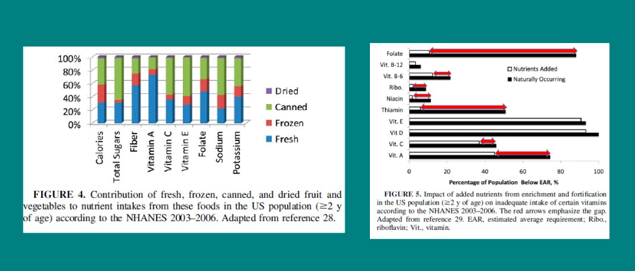

Food Technology II:
Progress and its Critics
Dr Shane V Crowley
Similarities and Differences
- Solar drying: food cut into small pieces and exposed to direct sunlight
- Spray drying: food sprayed into small droplets and exposed to hot dry air
Patent US3237A
Undated
usslave.blogspot.com
A series of vacuum pans, or partial vacuum pans, have been so combined together as to make use of the vapor of the evaporation of the juice in the first, to heat the juice in the second and the vapor from this to heat the juice in the third, which latter is in connection with a condenser, the degree of pressure in each successive one being less… The number of sirup-pans may be increased or decreased at pleasure so long as the last of the series is in conjunction with the condenser.
- Patent US3237A
Patent US3237A
Patent US3237A
Credit: GEA group
Advantages of the Evaporator
- Reduced manual labor and personal danger
- Decreased burning/discolouration of product
- Drastically lower energy consumption
Credit: USDA
Contribution to Nutrition
 Weaver and others: Processed foods - contribution to nutritionThe most important factor now, when considering food, nutrition and public health, is not nutrients, nor foods, so much as what is done to foodstuffs and the nutrients originally contained in them, before they are purchased and consumed.
- Monteiro & Cannon: What are ultra-processed products.

Credit: Monteiro & Cannon: What Are Processed Foods?
Conclusions
- Stories help us remember the significance and principles of technology
- The stories of food processing are often compelling examples of human development
- Nonetheless, there are criticisms that need to be considered (what about Twinkies?)